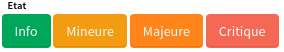

Displays buttons to change an event state. There are 4 states (info, minor, major, critical). The button corresponding to the event's current state is not displayed.

 Index
Index
Example
{{component-stateeditor content=attr.value title=attr.field showAll=attr.model.options.showAll}}Properties
 isCritical :boolean
isCritical :boolean
Computed property dependent on "content". Returns true if the event' state is critical.
isMajor :boolean
Computed property dependent on "content". Returns true if the event' state is major.
isMinor :boolean
Computed property dependent on "content". Returns true if the event' state is minor.
previousIsCritical :boolean
Computed property dependent on "previousContent". is "True" if the event's previous state is critical.
previousIsInfo :boolean
Computed property dependent on "previousContent". is "True" if the event's previous state is info.
previousIsMajor :boolean
Computed property dependent on "previousContent". is "True" if the event's previous state is major.
previousIsMinor :boolean
Computed property dependent on "previousContent". is "True" if the event's previous state is minor.
Methods
 previousIs(state)
previousIs(state)
Returns true if the event' state is the state specified in the method parameter.
Parameters:
-
integer
state
the state to check
Returns:
boolean